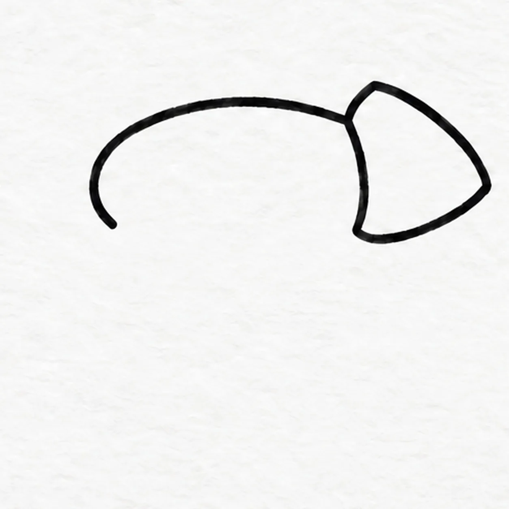
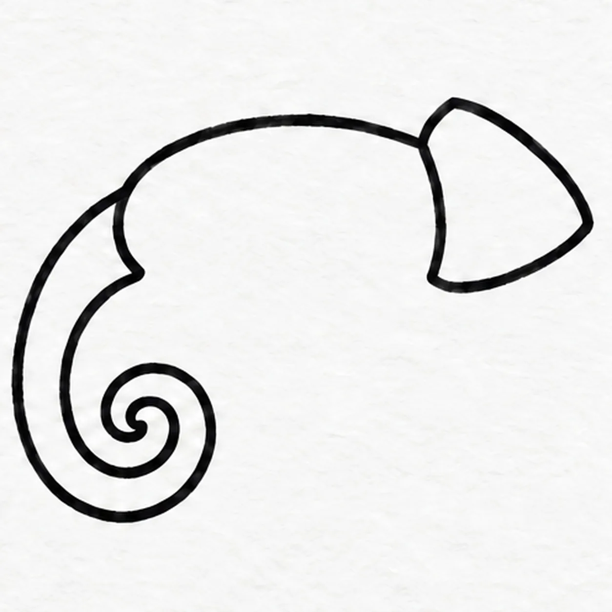
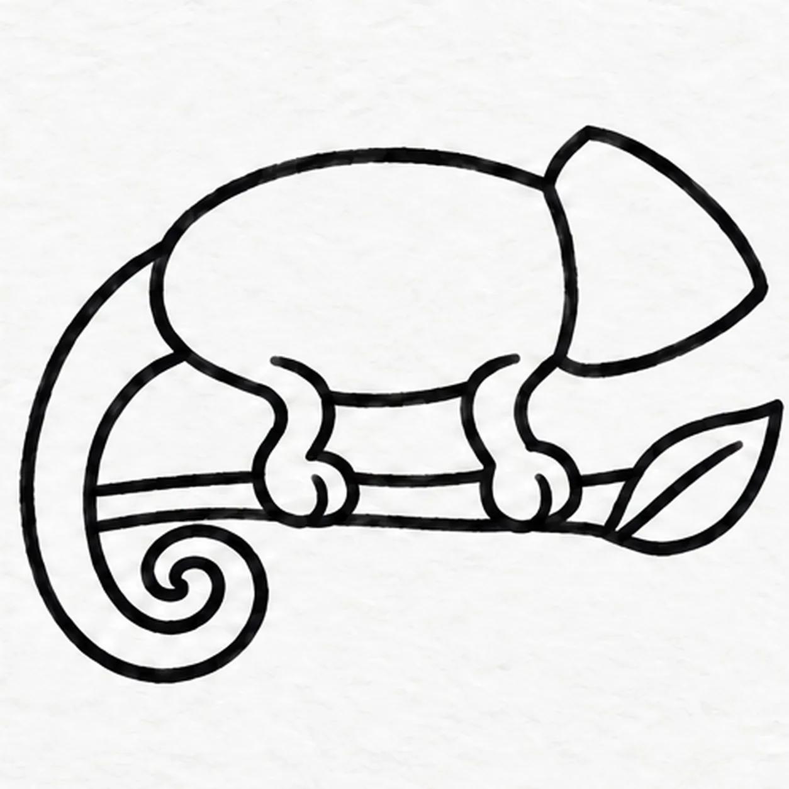
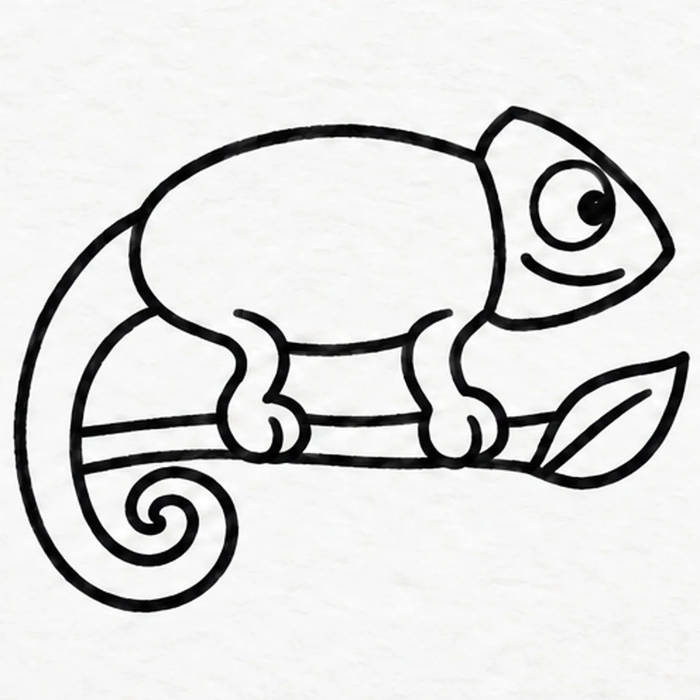
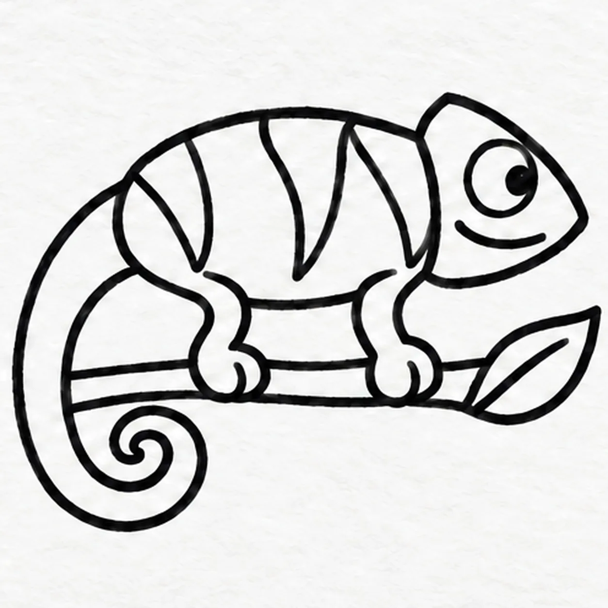

Felt-tip marker mode
Let's draw a chameleon
Treat this as one playful practice round: sketch the idea loosely, simplify the shapes, then commit with confident marker outlines and bright fills.
-
01

Draw the back and head
Draw a broad arched back slightly above the middle of the page, curving its left end down just a little. Attach a rounded triangular head at the right end with its nose pointing right. Leave the whole underside of the body open; keep the curved seam at the back of the head.
Marker tip: The open underside is deliberate. The belly and two legs will be drawn together later, so there is no line to erase.
-
02

Curl the long tail
From the left side of the back, pull one broad tail downward and curl it inward like a loose spiral. Return beside the first curve to make the tail thick at its base and narrow at its tip. Let the inner tail edge meet the short left body curve, leaving the underside open.
Marker tip: Ghost the spiral twice before drawing. Leave open paper between turns so the tail stays readable.
-
03

Grip a branch with two legs
Connect the open underside with a short rear belly curve, a bent rear leg, a middle belly curve, and a bent front leg that meets the head. End each leg in a rounded grasping foot with one short toe crease. Draw a thick horizontal branch behind the feet, stopping its upper edge at each grip, and finish its right end with one pointed leaf and a center vein.
Marker tip: Draw feet before branch so no line crosses them. This side view shows only two near-side legs; the far pair stays hidden behind the body.
-
04

Give the face a watchful look
Inside the head, draw one large circular turret eye with a small dark pupil aimed right. Add a long curved smile below the eye, following the lower edge of the head.
Marker tip: Keep the pupil off center toward the nose. One oversized eye and a long smile give this side-view character its expression.
-
05

Curve three stripes across the body
Draw three separate curved stripe shapes inside the body. Start each at the upper back edge, curve down to a tapered point above the belly, and return to the back. Keep the rear stripe, middle stripe and front stripe separate.
Marker tip: Stop each stripe above the nearest leg attachment. Keep the head, tail and legs unstriped so the pattern stays readable.
-
06
Color the curious chameleon
Fill the body, head, tail and two legs with lime-green marker. Color the three body stripes turquoise, the eye yellow with its dark pupil, and the branch warm brown. Fill the leaf teal. Keep the same outlines and let the marker strokes show.
Marker tip: Work from each outline inward and let wet areas dry before touching them again. Try your own two-color body pattern while keeping the three established stripes.